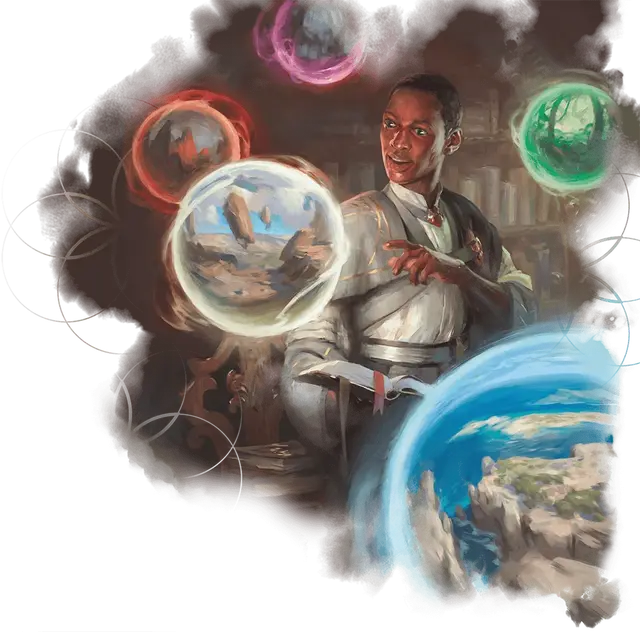

Первокурсник
First-Year Student
Маленький или Средний Гуманоид (Волшебник), любое мировоззрение

Класс Доспеха 11
Хиты 33 (6к8 + 6)
Скорость 30 футов
| мод | спас | ||
|---|---|---|---|
| СИЛ | 8 | −1 | −1 |
| ЛОВ | 12 | +1 | +1 |
| ТЕЛ | 13 | +1 | +1 |
| мод | спас | ||
|---|---|---|---|
| ИНТ | 12 | +1 | +1 |
| МДР | 10 | +0 | +0 |
| ХАР | 11 | +0 | +0 |
Чувства пассивное Восприятие 10
Опасность 1/2 (100 опыта)
Бонус мастерства +2
Особенности
Языки. Знает Общий и ещё 2 любых языка.
Рад быть здесь. Первокурсник с преимуществом совершает броски инициативы.
Действия
Магическая вспышка. . Рукопашная или Дальнобойная атака заклинанием: +3 к попаданию, досягаемость 5 футов или дистанция 60 футов, одна цель. Попадание: 7 (1к12 + 1) урона силовым полем.
Использование заклинаний. Первокурсник накладывает одно из следующих заклинаний, используя Интеллект в качестве базовой характеристики (Сл спасброска от заклинаний 11):
• Неограниченно: волшебная рука [mage hand], фокусы [prestidigitation];
• 1/день: обнаружение магии [detect magic].
Реакции
Удача новичка (2/день). Когда первокурсник проваливает спасбросок, он может перебросить к20. Он должен использовать новый результат.
Описание
Студент, который еще не выбрал один из пяти магических факультетов Стриксхейвена, считается первокурсником после одного года базовой учебной программы, которую большинство студентов должны пройти, прежде чем выбрать свою школу. Эти начинающие студенты обучаются преподавателями из всех факультетов Стриксхейвена, изучая элементарную магию по мере того, как они приспосабливаются к университетской среде. Как только студент выбирает факультет, он меняет свою простую серую форму первокурсника на атрибуты выбранной им школы и начинает оттачивать или даже заменять магию, которой он научился на первом курсе, другими навыками.